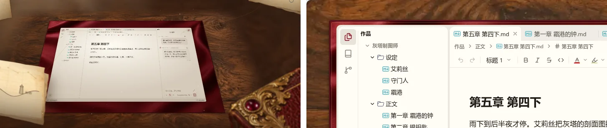
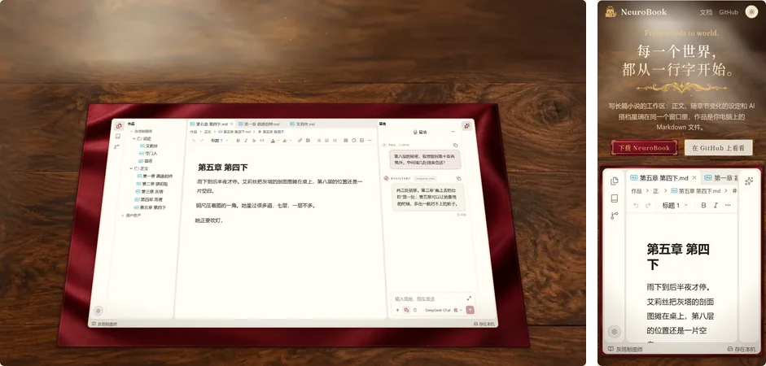

产品介绍首页：入殿·俯案成界（第 12 轮）
照第 11 轮的回答改：丝绸换成生成的缎面照片；白天首屏的上半截不再是一片米黄；第一幕的拖动放慢、演示时指针一直显示。第二幕（编辑器）先出脚本，连同从第一幕滚过去的开场动画，请你定了再做原型。
白天首屏的上半截，还米黄吗？
左：第 11 轮。右：这一轮。

丝绸换成了生成的缎面照片。左：首屏里放大。右：落地以后的窄边。

左：往下滚到一半。右：手机窄屏。
为什么米黄（请 @designer 看了第 11 轮的白天）
- 墙是一整片没有材质的平渐变，上半截铺满高明度的暖象牙；左上的窗光融进亮底，拉不开明暗；又和羊皮纸同色，金色花饰的华丽感被吃掉了。
这一轮改了什么（只用现有的素材）
- 墙换成远处虚焦的胡桃木（案面那张照片糊过一份），像一张长案伸进景深里；左上一团暖亮与两道斜光，四周沉到深木色；标题与说明那一块压暗。
- 首屏的字与导航换成浅色：首句暖象牙、题辞暖金、说明浅米。往下滚时，案面的远边淡进同一片木色里。手机窄屏同样。
- 丝绸换成生成的缎面照片（生成 1 张，没有重发），包边与细金线仍用样式叠。
还能再进一步（都要再花一次图片额度）
- @designer 推荐：生成一张午后的古典藏书阁实景，换掉这面虚焦的木墙。深胡桃木的书架一层层往里退，红金皮面的书脊在焦外是一粒粒金光，左上高窗斜进来的光里有浮尘，正中留一块暗木的拱龛给标题。它说书架的纵深与书脊的光斑只用样式做不出来。
- 另一个方向：亮调的雕花护墙板（象牙灰泥的浮雕、淡金线脚、窗棂的斜影），保留浅底深字，白天和夜里一亮一暗；@designer 觉得华丽感偏弱。
第一幕的拖动快慢与指针，这样可以吗？
- 拖动放慢：第 7 轮你嫌慢，第 8 轮加快以后又嫌快，这一轮取中间。一次拖动从 0.5 到 0.95 秒改成 0.7 到 1.3 秒（按距离定）；按下前、按下后、落点上、松手后的停顿，从 0.14、0.08、0.34、0.3 秒改成 0.24、0.14、0.48、0.4 秒。量过整幕，拖动的路上没有先排成别的样子。
- 指针一直显示：每一拍开演时在工作台下半截的空处现身；打字前挪到那半句末尾旁边，问星璃前先点一下对话的输入框；几次动手之间停在原处。只在暂停、你自己动了工作台、页面滚走、演完交给你的时候收起。
- 这两样要动起来才看得出，请在 Lab 里看一遍。
第二幕（编辑器）的脚本，往下做吗？
你问“从第一幕滚动到第二幕的时候，没有演示开场动画吗”：第二幕还没做，下面的开场就是给它的。脚本请 @designer 看过一遍，按它的意见改了开场与顺序。
开场：沉幕落印（约 1.6 秒）
- 从第一幕往下滚过分界时放。滚动只决定现在是哪一幕，开场是越过分界才放的一段动画，不跟着滚动一帧一帧走。
- 先 0.3 秒：工作台压暗、微微退后，第一幕的眉题与六段章节条往左淡出。
- 再 0.7 秒：工作台正中，金线一笔描出大字“II”，下面展开副题“为中文长篇做的编辑器”与一道花饰。
- 最后 0.65 秒：这枚“印”往上收进眉题；工作台回亮，真的收起右边星璃那一栏，正文展宽到约七成（不硬放大，整体最多推近 4%）；第二幕的五段章节条依次点亮。
- 往回滚过分界：不落印，0.5 秒把星璃那一栏放回来，回到第一幕演完、交给你的样子。分界前后留一段缓冲，在边上来回滚不会反复放。
五拍（接着第五章往下写：艾莉丝把灰塔的剖面图摊在桌上，第八层还是空白）
- 照中文的规矩：“提示块、注音、紧挨着标点的粗体，都照中文写。”行首打中文的顿号，斜杠菜单弹出，打拼音首字母 tsk 筛到“提示块”，插一条“伏笔：第八层在第二十七章揭开”（块里紧挨全角句号的“三下”照样加粗）；再给“霜港”加注音。结论：提示块与带读音的地名稳稳立在正文里。
- 一张图，存进作品：“粘贴一张图，它就存进作品的插图文件夹。”编辑区右下角闪过 Ctrl V 的键帽；正文里一闪“正在上传 1 张图片”，落成一张灰塔的剖面版画；左栏“插图”展开，多出一个文件。结论：版画与新文件同时亮着，中间一条细金线连着。
- 章节的属性：“这一章是谁的视角、写到哪了，在正文上方一眼看到。”正文上方的摘要展开成卡片，状态改成“修改中”，“出场”里加一个“守门人”；收起。结论：收起后的那行摘要直接显出新状态与“守门人”。
- 链到设定：“提到灰塔，就链到它的那一页。”选中“灰塔”，Ctrl K，卡片里地址已经填好，确认；按住 Ctrl 点它，灰塔的设定页在新标签里翻开（为第三幕“世界”铺垫），停一秒切回第五章。不演手敲路径，路径留到第五拍揭晓；示例作品里补一页“灰塔”的设定。
- 还是那份 .md：“稿子就是 Markdown 文件，换个编辑器照样打开。”右键标签“用源码编辑器重新打开”，同一章换成原文：提示块、注音、图片、属性、链接在原文里自上而下依次描金，齐亮一秒，切回富文本。
演完交给你：“轮到你写。”光标停在正文末尾闪着，可以直接打字。
遮罩与版面
- 每一拍照亮讲的那一块：第一拍是当前那段与菜单，收菜单后四角框住提示块与注音词；第二拍图出来时同时照亮版画与左栏的新文件；第三拍是章首的属性区，四角跟着卡片展开收起；第四拍先照词与链接卡，跳转时亮处扩到新标签与设定正文；第五拍先短亮右键菜单，进原文后改成贴着行的金边依次点亮。
- 眉题、章节条、指针、涟漪、遮罩与金角都保持原大小，不跟着工作台推近；键帽提示放在编辑区右下角，避开章节条与状态栏。
- 做原型前要先核实一件事：链接与插图在应用的 Spec 里还标着“没做”，变更记录 0.14.0 却写“已能插入”。我会先在代码与测试里核对，做不到的那一拍换成别的再告诉你。
已定
- 首页给搜索进来的人，做得像产品介绍；书庭这类页面另做、自由发挥（2026-11-26）
- 截图尽量少：直接把工作台复原，让人体验到拖动、分屏与布局动画的丝滑（第 1 轮）
- 第一屏把介绍说明白，同时要有高级精美的动画，让人想往下滚；往下滚进入滚动动画（第 1 轮）
- 基调取 w00050 t06 契约仪式页的史诗、神圣、西幻气氛，不复制；现有的 NovelAI 场景图不直接用（2026-11-26）
- 要讲的功能：写作与编辑器、世界引擎、剧情（在做）、星璃与 Agent、本地与开源、插件与 SDK、桌面版、模型自选；llmlint 不列（2026-11-26）
- 先做方向一《入殿·俯案成界》；材质可以用生成的贴图，首页可以用星璃的立绘与贴纸（2026-11-26）
- 首屏方向不变、先打磨材质；按钮加金边一类的装饰，往皇室奢华感走；工作台缺省夜间配色、可以切换（第 4 轮）
- 第一幕放慢讲清楚，加回浮窗、视图换位置、关掉再打开，和首屏一样华丽（第 4 轮与会话）
- 首句用 e3“每一个世界，都从一行字开始。”，配 From words to world.（第 4 轮与会话）
- 演示的拖动用实时布局；访客动过要有恢复动画；顺手介绍编辑器的标注与高亮；整个页面要有白天；首屏静中有动、纸条可以轮播；按钮出几版（第 5 轮之后的会话）
- 第一幕不用访客滚动：落地以后自动连播，访客愿意就停着看；拖动不要上下左右中的落点分区；首屏的动静要快一些、大一些、更高级（第 6 轮之后的会话）
- 第一幕这样连播可以；章节条用古籍标尺；首屏“从字到世界”与指针响应都要，旁边的东西要能点、点了稍放大，要有跟鼠标位置、速度互动的动画；按钮用皮面烫金；白天要再改；虚拟指针压到菜单之上、拖动快些走弧线、字幕换显眼的地方、重点加遮罩（第 7 轮）
- 字幕放在工作台正上方；重点用遮罩，但高亮要做得好看；首屏能点能动手的几处可以，指针效果要更明显、更好看，考虑多加点元素；白天的桌面换成生成的旧橡木（第 8 轮）
- 高亮用鎏金标记；首屏的提灯与金丝可以；星盘与线索丝都留，但要有看得见的动画与交互；白天要更华丽，不能只有一张桌、其余灰蒙蒙（第 9 轮）
- 星盘与线索丝这样可以；白天的桌面换生成的深胡桃木，工作台的投影与四周要处理（可以垫一块红丝绸）；首屏滚动变卡要查（第 10 轮）
- 首屏滚动顺了；丝绸换成生成的缎面照片；白天首屏的上半截不要一片米黄；第一幕的拖动放慢一些、演示时指针一直显示；第二幕要有开场动画（第 11 轮）